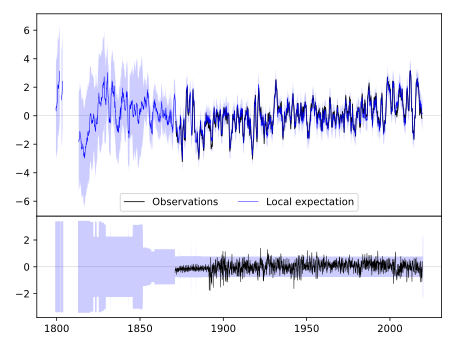
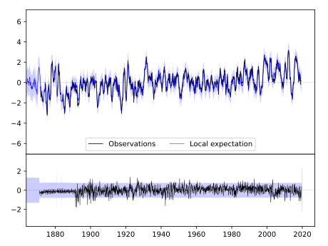
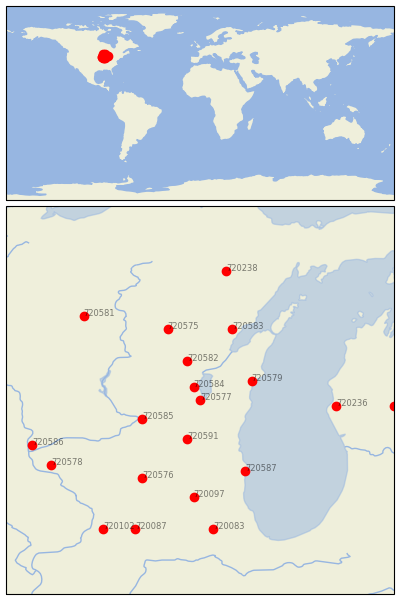

FOND DU LAC [USA]


| Neighbour | Name | Country | Distance | Lon/Lat | Years |
|---|
| 720577 | FOND DU LAC | USA | 2 | -88.5, 43.8 | 1871-2019 |
| 720584 | OSHKOSH | USA | 23 | -88.6, 44.0 | 1871-2019 |
| 720591 | WATERTOWN | USA | 68 | -88.7, 43.2 | 1871-2019 |
| 720582 | NEW LONDON | USA | 68 | -88.7, 44.4 | 1856-2019 |
| 720579 | MANITOWOC | USA | 72 | -87.7, 44.1 | 1851-2019 |
| 720585 | PORTAGE | USA | 79 | -89.4, 43.5 | 1890-2019 |
| 720583 | OCONTO 4 W | USA | 128 | -88.0, 44.9 | 1888-2019 |
| 720575 | BOWLER | USA | 128 | -89.0, 44.9 | 1893-2019 |
| 720587 | RACINE | USA | 134 | -87.8, 42.7 | 1855-2019 |
| 720576 | BRODHEAD | USA | 152 | -89.4, 42.6 | 1893-2019 |
| 720097 | MARENGO | USA | 167 | -88.6, 42.3 | 1856-2019 |
| 720236 | HART 3 WSW | USA | 169 | -86.4, 43.7 | 1886-2019 |
| 720581 | MEDFORD | USA | 203 | -90.3, 45.1 | 1890-2019 |
| 720578 | LANCASTER 4 WSW | USA | 216 | -90.8, 42.8 | 1872-2019 |
| 720083 | AURORA | USA | 222 | -88.3, 41.8 | 1857-2019 |
| 720586 | PRAIRIE DU CHIEN | USA | 223 | -91.1, 43.1 | 1822-2019 |
| 720238 | IRON MT KINGSFORD WW | USA | 224 | -88.1, 45.8 | 1893-2019 |
| 720087 | DIXON 1 NW | USA | 236 | -89.5, 41.8 | 1881-2019 |
| 720232 | BIG RAPIDS WTR WKS | USA | 241 | -85.5, 43.7 | 1887-2019 |
| 720102 | MORRISON | USA | 253 | -90.0, 41.8 | 1880-2019 |